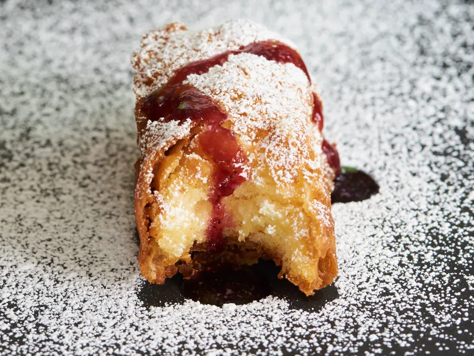

Description
Have you ever had a longing of reliving your childhood? Well if you're anything like me you'd have had twinkies at some point during your pre-adult formation. However standard twinkies seem boring so why not throw 'em in a pot of oil and be amazed!
Ingredients
- 6 Hostess Twinkies
- 6 wooden popsicle sticks
- vegetable oil (or regular oil) - just enough to cover twinkies
- 237ml of milk
- 30ml vinegar
- 15ml oil
- 237ml flour
- 5ml of baking powder
- 2ml of salt
Batter
Steps
- Freeze the twinkies for at least 2 hours (or overnight).
- Heat your oil in fryer to 375 degrees.
- Mix your batter as such: milk, vinegar,oil.
- In another bowl blend flour, baking powder and salt.
- whisk wet ingredients into dry, mix until smooth.
- refrigerate until oil reaches temperature.
- insert sticks into twinkies, leaving enough of a end to hold.
- dust with flour and dip into batter be sure batter covers the entire twinkie place twinkie in hot oil with utensil being sure the twinkie browns evenly (the twinkie will float) about 3- 4 minutes.
- Remove to paper towel- cool 5 minutes.
- Serve with a Berry Sauce Raspberries or mixed Berry preserves heated until warm<./li>
- Use for dipping.